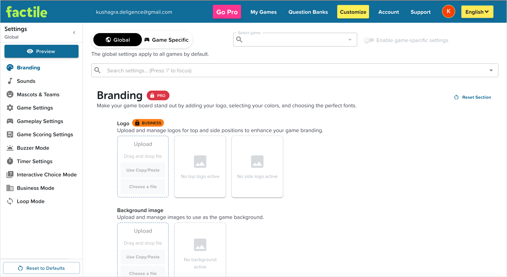
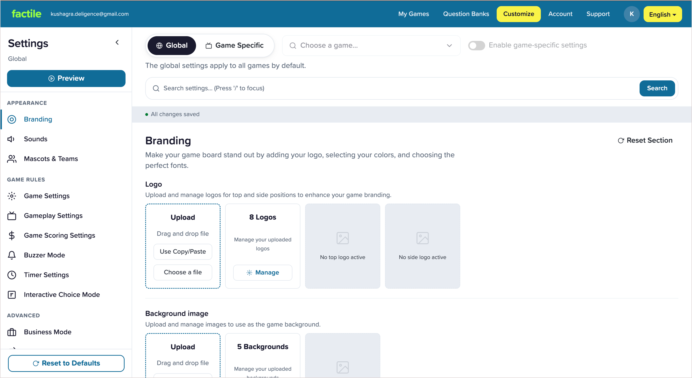
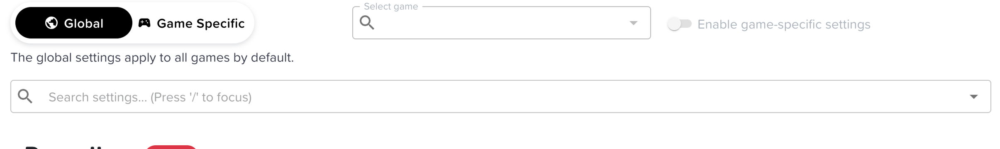
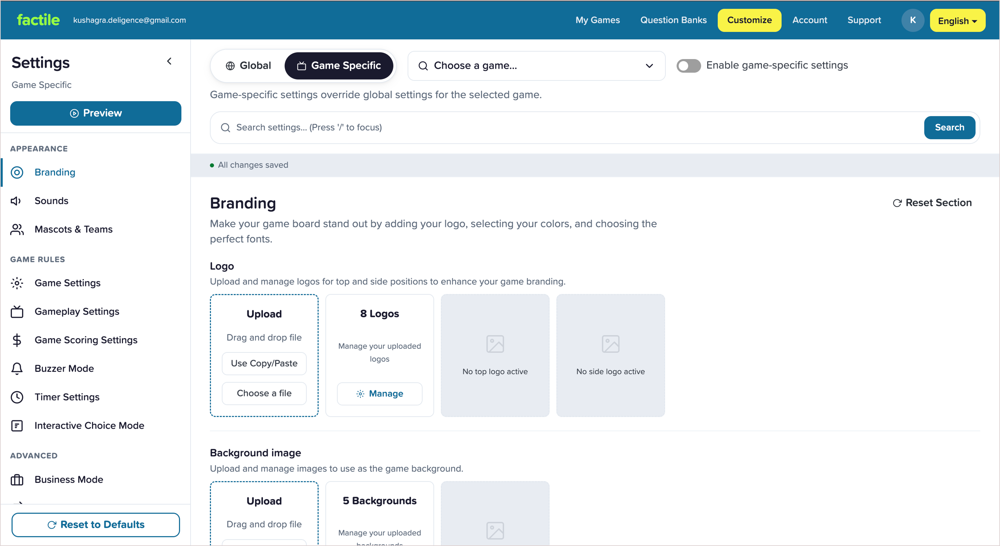
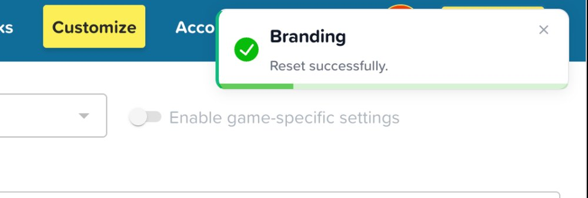
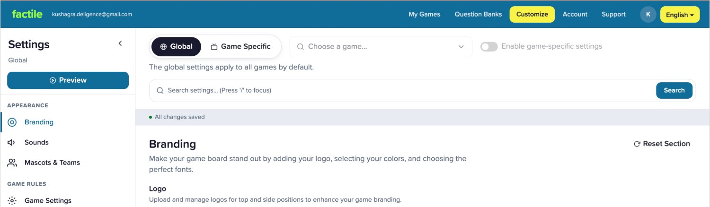
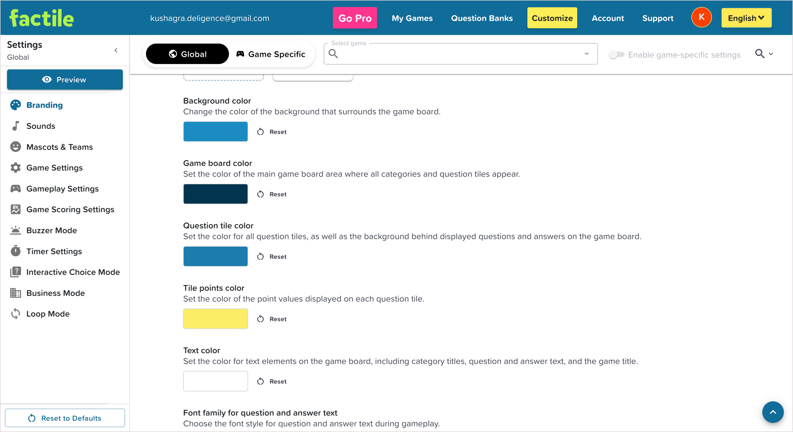
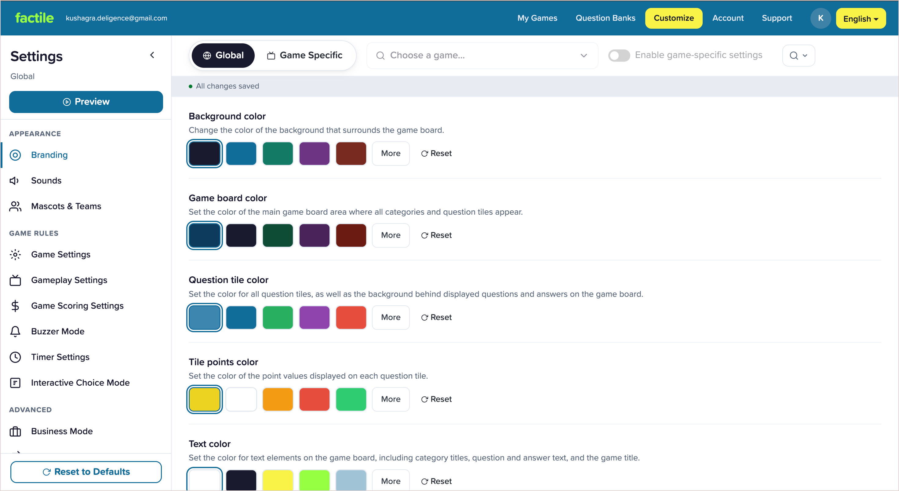

Factile lets teachers create and run Jeopardy-style review games. Customize is where they personalize those games — logos, colors, fonts, sounds, timers, scoring, teams, and more.
Every setting belongs to one of two scopes: Global, which applies across all games, or Game-specific, which overrides Global for an individual game. Users choose the scope before editing any setting.
Years of feature growth had left Customize without a cohesive design system. Visual hierarchy was weak, components behaved inconsistently, and important actions were harder to scan and predict.
Beneath that was a deeper product issue: the experience was scope-first, asking users to decide between Global and Game-specific before they even knew what they wanted to change. Reworking that model wasn't possible in this iteration, so the redesign focused on reducing the visual and interaction debt while working within the existing product structure.
Designed a cohesive design system for the Customize experience, introducing consistent components, spacing, typography, and visual hierarchy so settings became easier to scan and understand.
Standardized interaction patterns across the page to make controls behave predictably, improving learnability and reducing friction. The redesign also met WCAG AA/AAA accessibility standards.
Rather than changing the underlying product model, I preserved familiar workflows and used the redesign to establish a stronger foundation for a future task-first experience.
The screens here are pre-release iterations from my design process. This case study is about the reasoning and first iteration behind the work.

Not one broken thing: three layers, each demanding a different response. This framework organizes everything that follows.
Built successfully without a dedicated designer, components evolved independently. The result was accumulated inconsistency that quietly raised the effort of reading the page.
The three marked areas below
Each friction point was small. But customization is a high-frequency, settings-heavy workflow, so small interruptions compound.
Before touching anything, the model forces one branching decision, scope, and hides three extra steps behind one of the answers.
Overall layout · navigation location · the customization structure people had already learned.
Hierarchy · grouping · feedback · affordances · accessibility · consistency: everything that could change without moving the furniture.
Grouping cuts repeated scanning; the selected state no longer leans on colour alone. Drag to compare; the iteration is on the left.



Game selection & settings search shared one look, so users couldn't tell which did what.
Selection reads as selection; search gets a dedicated field and an explicit Search button.


The old flow put contrast responsibility on the user. The iteration makes curated, safer choices the default path; advanced customization still available. Drag to compare.


I standardized the visual & interaction language so the work could become reusable infrastructure, not a set of one-off mockups.
That system evolved into a mini demo built for a different product, since Factile's own system stays under NDA.
Check out the mini design system demo on the next case studyThe work didn't replace the product's mental map. It reduced the effort to navigate it, understand it, and make repeated changes.
The constraint justified preserving the current model for this pass; it didn't put that model beyond criticism. Two UI gaps still stand:
This addresses the product-model debt above, scope decided too early. Delay the decision until there's something to apply: validated with existing users before it replaces the familiar model. It couldn't be built this pass because of the constraint below, but it's the direction this should head.